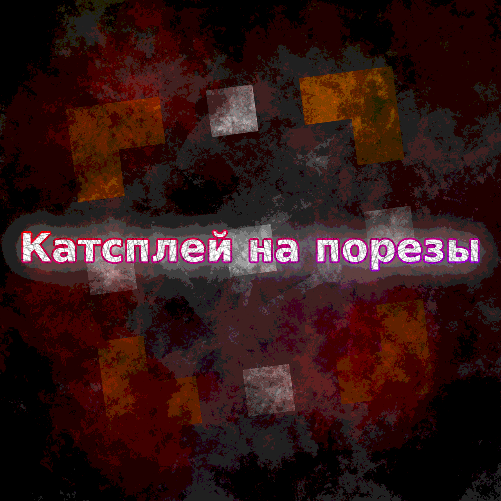
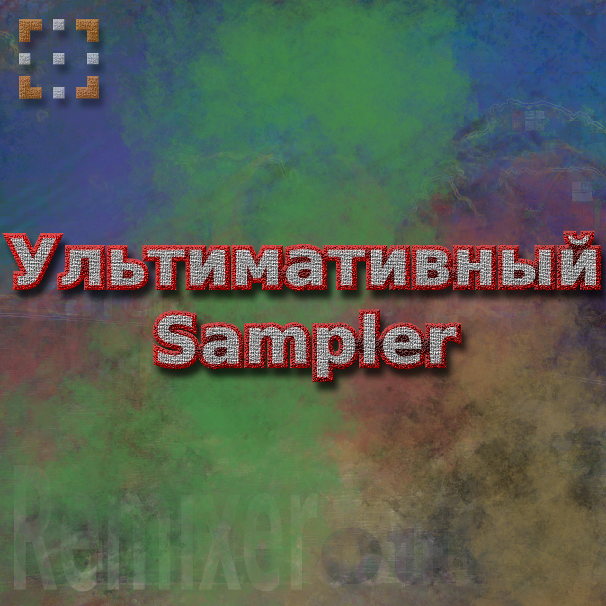

Музыка

Альбом "Катсплей на порезы"
Год выпуска: 2026
В разроботке...
Суть данного 16 тревого альбома - повторить стиль 4 Позиций Бруно и других проектов Ситникова. Но если там используют оборудование то я использую FL Studio 26, для написания музыки.
Приятного прослушивания!
У меня появилась идея! | Скачать
Всё ближе к цели | Скачать
24 Нокии Feat. Redner | Скачать
К сожелению не выжил | Скачать
Радостный труп | Скачать
Потерянный клочок воспоминаний | Скачать

Альбом "Ультимативный Sampler"
Год выпуска: 2026
Готов
Альбом в котором используется много семплов в частности из Doki Doki Literature Club